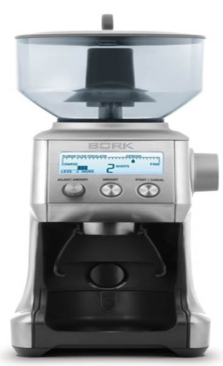
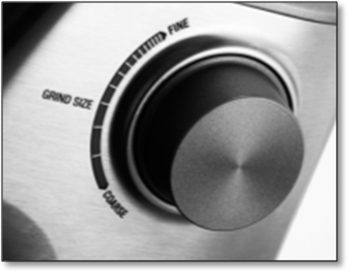
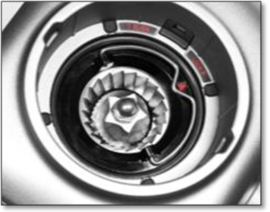
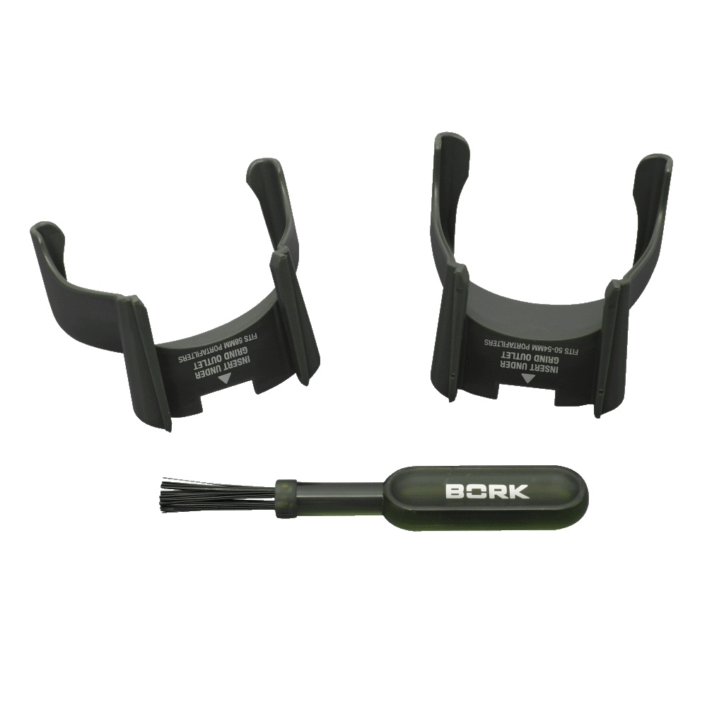
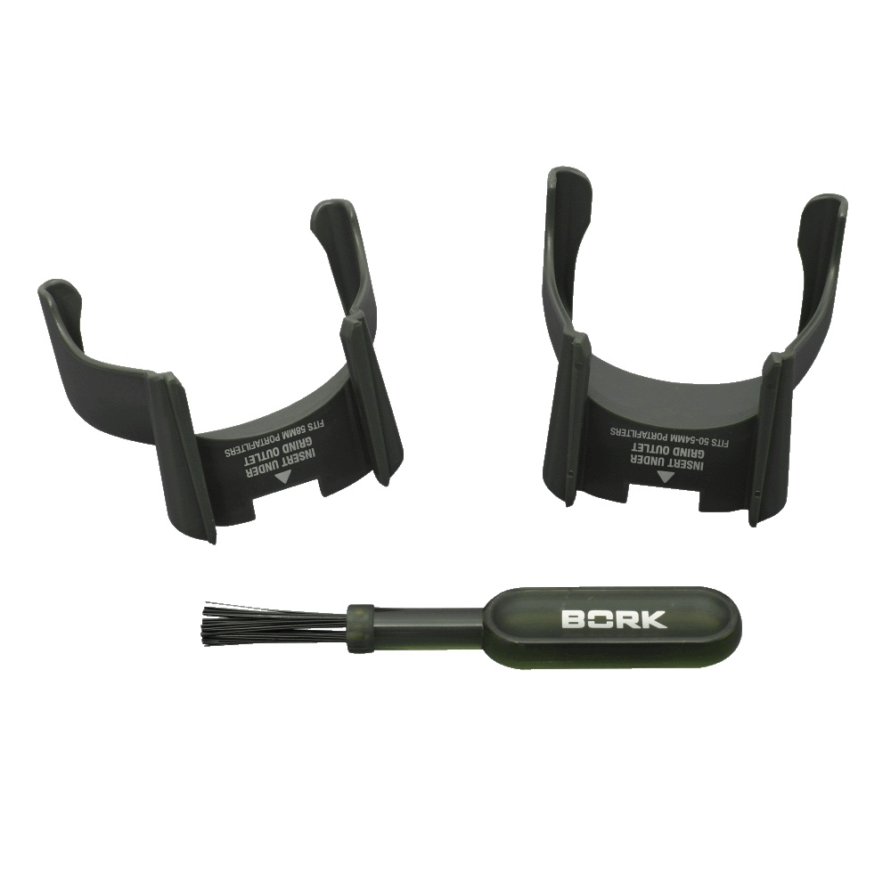
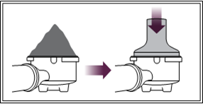
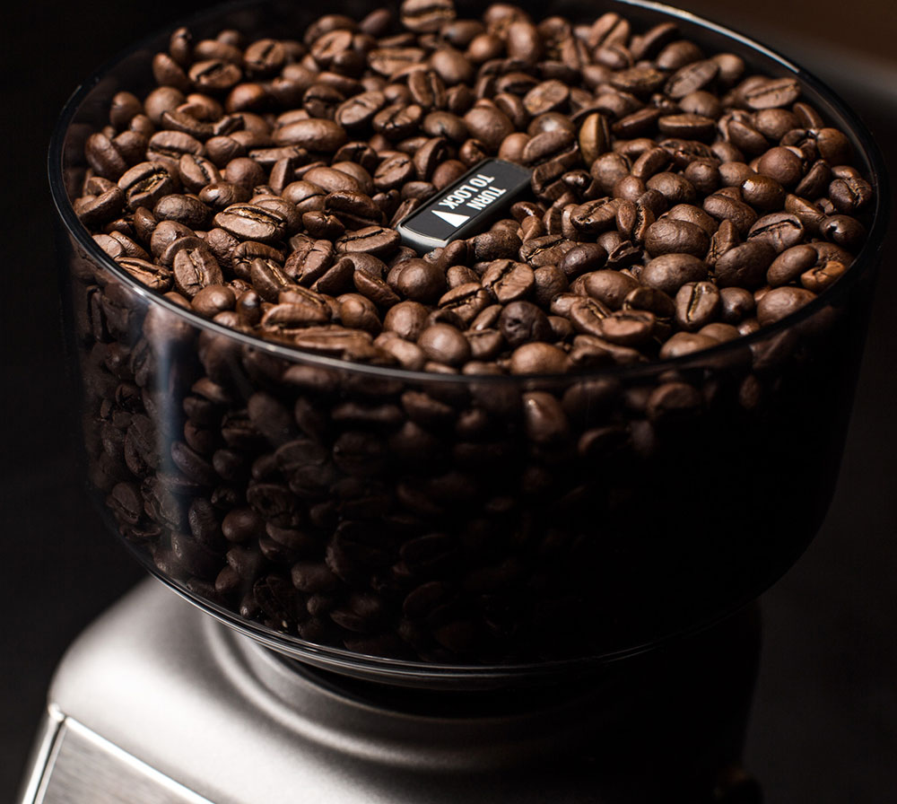
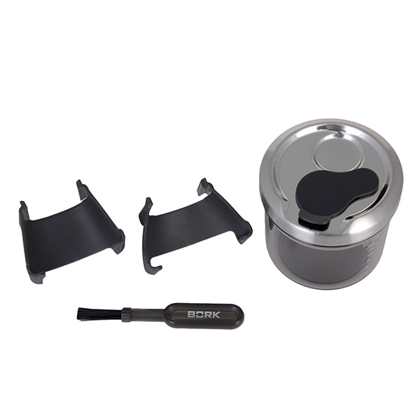

Кофемолка BORK J801
Особенности
- 60 степеней помола
- Конические жернова из нержавеющей стали
- Возможность помола специй
- Контейнер для молотого кофе с герметичной крышкой
- Возможность прямого помола кофе в держатель фильтра
- Информативный дисплей
- Страна производитель: Китай
60 степеней помола
Регулировка степени помола дает возможность варьировать измельчение кофейных зерен в зависимости от сорта кофе, вида обжаривания и для приготовления кофе разными способами: в кофеварках эспрессо, в капельных и гейзерных кофеварках, а также используя френч-пресс. Выберете желаемую степень помола для получения напитка, который придется Вам по вкусу больше всего.
Возможность помола специй
Коническая конструкция ножей дает возможность помола помимо кофейных зерен любых специй, насыщая ароматом Ваши любимые блюда.
Конические жернова из нержавеющей стали
Позволяют добиться равномерного помола, что необходимо для приготовления кофе под давлением, к примеру, эспрессо. Благодаря оптимальной скорости вращения конические жернова не нагреваются и, не обжигая зерна, сохраняют аромат кофе.
Предназначена для работы с профессиональными и бытовыми кофеварками
 

В комплект входят 2 крепления для держателей фильтров различного диаметра (маленькую 50-54 мм или большую 58 мм), используемых как в профессиональных, так и бытовых кофеварках и кофемашинах. Данные крепления дают возможность прямого помола кофе в держатель фильтра.
Контейнер для молотого кофе с герметичной крышкой
Молотый кофе очень быстро выветривается и впитывает в себя влагу, поэтому для того, чтобы кофе не терял своего аромата и вкусовых качеств, кофейные зерна рекомендуется молоть непосредственно перед приготовлением, а молотый хранить в герметичном контейнере.

Надежность и комфорт в использовании
Расширенные возможности использования, прочные жернова и защита двигателя от перегрева гарантируют высокую надежность. Ножки с противоскользящим покрытием, вместительный прозрачный контейнер для загрузки кофейных зерен и съемный поддон обеспечивают удобство при использовании кофемолки.
Режим энергосбережения
Если кофемолка не используется в течение 5 минут, то она автоматически выключается. Для возобновления работы кофемолки в режиме энергосбережения/спящем режиме, нажмите любую кнопку на панели управления кофемолки.
Автоматическое отключение при перегреве
Комплектация BORK J801
- Держатели
- Щетка для чистки
- Емкость для молотого кофе